ITSI Services & KPI Configuration Guide
Splunk IT Service Intelligence (ITSI) — Step-by-step guide to creating services and KPIs for observability across ThousandEyes, AppDynamics, and Splunk Observability Cloud.
Overview
This guide walks you through creating ITSI services and their associated KPIs. The goal is to build a service hierarchy that provides a unified view of your environment, as shown below:
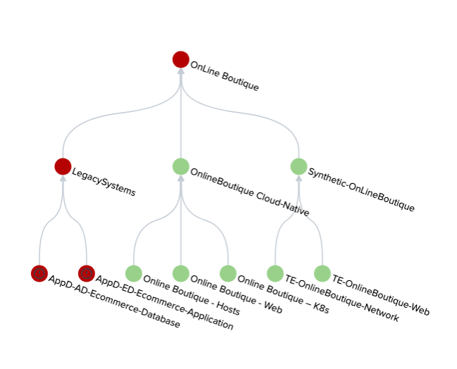
Table of Contents
- AppDynamics Services
- AppD-ED-Ecommerce-Application
- AppD-AD-Ecommerce-Database
- LegacySystems (Aggregation)
- ThousandEyes Services
- TE-OnlineBoutique-Web
- TE-OnlineBoutique-Network
- Synthetic-OnLineBoutique (Aggregation)
- Splunk Observability Cloud Services
- Online Boutique – Web
- Online Boutique – Hosts
- Online Boutique – K8s
- Cloud-Native (Aggregation)
Navigation
| Section | Services Created | Method |
|---|---|---|
| AppDynamics | 3 services | Template + Manual |
| ThousandEyes | 3 services | Template + Manual |
| Splunk O11y | 4 services | Clone + Manual KPI |
AppDynamics Services
AppD-ED-Ecommerce-Application
Navigation path:
Apps > IT Service Intelligence > Configuration > Service Monitoring > Service and KPI Management
- Click Create Service
- Select Link Service Template
- In the template dropdown, find:
Splunk AppDynamics Application Template - Set the name to
AppD-ED-Ecommerce-Application - Click Create
KPI Configuration — Keep only the following KPIs:
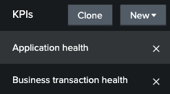
Entity Configuration:
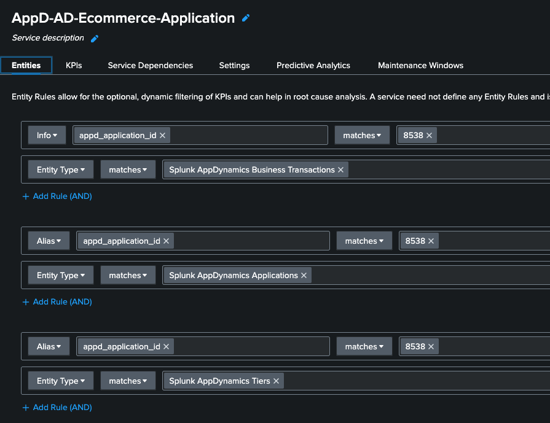
⚠️ Important: Validate that the entities were successfully identified before saving.
- Save and Enable the service.
AppD-AD-Ecommerce-Database
Navigation path:
Apps > IT Service Intelligence > Configuration > Service Monitoring > Service and KPI Management
- Click Create Service
- Select Link Service Template
- In the template dropdown, find:
Splunk AppDynamics Application Template - Set the name to
AppD-AD-Ecommerce-Database - Click Create
KPI Configuration — Keep only the following KPI:
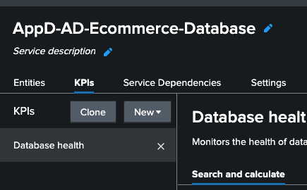
Entity Rules Configuration:
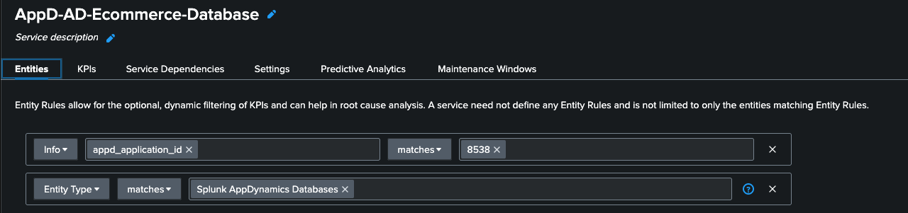
⚠️ Important: Validate that the entities were successfully identified before saving.
- Save and Enable the service.
LegacySystems (Aggregation)
This service aggregates the two AppDynamics services created above.
Navigation path:
Apps > IT Service Intelligence > Configuration > Service Monitoring > Service and KPI Management
- Click Create Service
- Set the name to
LegacySystems - Select Manually add service content
- Click Create
- Click Service Dependencies → Add Dependencies
- Under Service Dependencies, select the previously created AppDynamics services
- For each, select their respective
ServiceHealthScoreKPIs
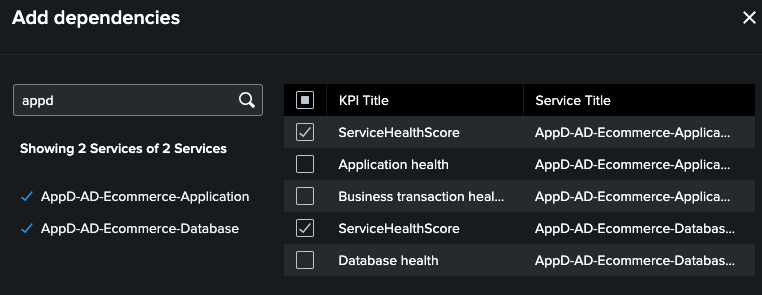
- Save and Enable the service.
⏳ Wait a few minutes. The services should then appear in the Service Analyzer.
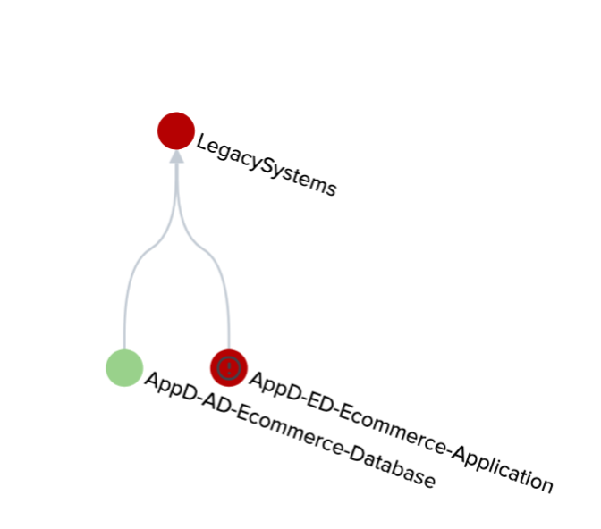
ThousandEyes Services
TE-OnlineBoutique-Web
Navigation path:
Apps > IT Service Intelligence > Configuration > Service Monitoring > Service and KPI Management
- Click Create Service
- Set the name to
TE-OnlineBoutique-Web - Select Link Service Template
- In the template dropdown, find:
Cisco ThousandEyes Web Layer
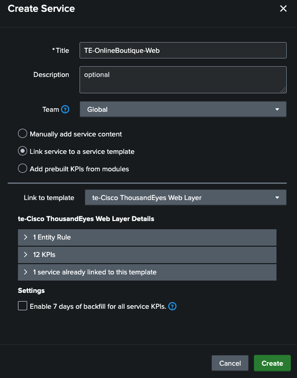
- Click Create
Note: You are creating a service definition based on a template already imported by the content pack. This saves significant configuration time.
KPI Configuration — Keep only the following KPIs:
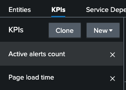
Entity Configuration — Verify the entity definition matches the figure below:
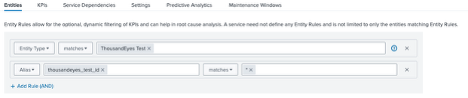
⚠️ Important: You must have at least one entity discovered under Matched Entities. If nothing appears, verify that Discovery Search is enabled and has run at least once. Also Important We are using
*as the test ID justo to make it easier. In production you can use the correct test id or the test name
- Save and Enable the service.
TE-OnlineBoutique-Network
Navigation path:
Apps > IT Service Intelligence > Configuration > Service Monitoring > Service and KPI Management
- Click Create Service
- Set the name to
TE-OnlineBoutique-Network - Select Link Service Template
- In the template dropdown, find:
Cisco ThousandEyes Network Layer
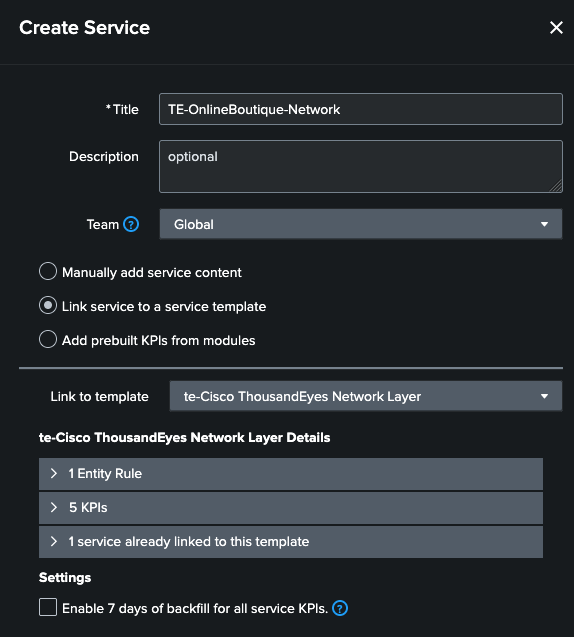
- Click Create
KPI Configuration — Keep only the following KPIs:
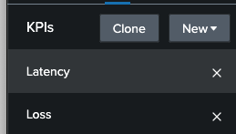
Entity Configuration:
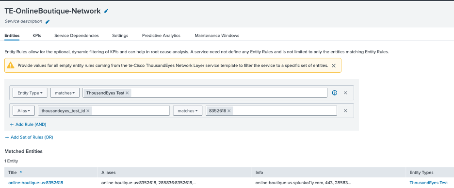
- Save and Enable the service.
Synthetic-OnLineBoutique (Aggregation)
This service aggregates the two ThousandEyes services created above.
Navigation path:
Apps > IT Service Intelligence > Configuration > Service Monitoring > Service and KPI Management
- Click Create Service
- Set the name to
Synthetic-OnLineBoutique
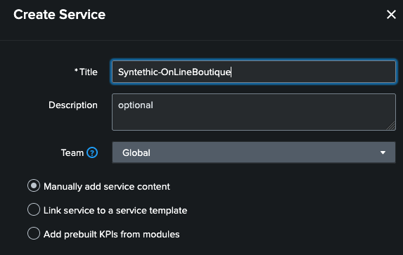
- Select Manually add service content
- Click Create
- Click Service Dependencies → Add Dependencies
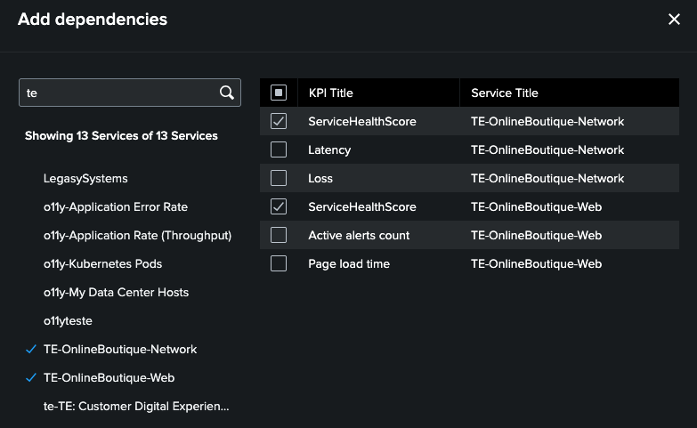
- Select the two previously created ThousandEyes services
- For each service, mark only the
ServiceHealthScoreKPI (as shown above) - Save and Enable the service.
⏳ Wait a few minutes. The services should then appear in the Service Analyzer.
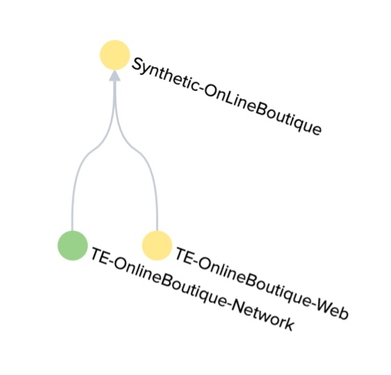
Splunk Observability Cloud Services
Online Boutique – Web
For this section, we use a clone strategy to save configuration time.
Navigation path:
Apps > IT Service Intelligence > Configuration > Service Monitoring > Service and KPI Management
1 - Locate the service named Application Duration and click Clone
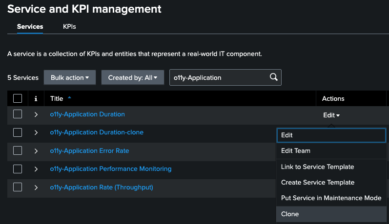
2 - Rename the cloned service to Online Boutique - Web and click Clone
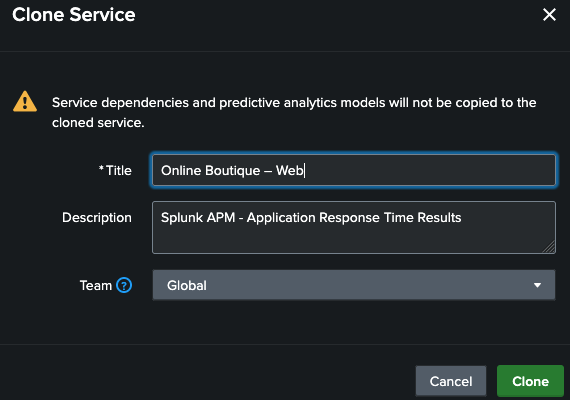
3 - Locate the newly created service and click Edit
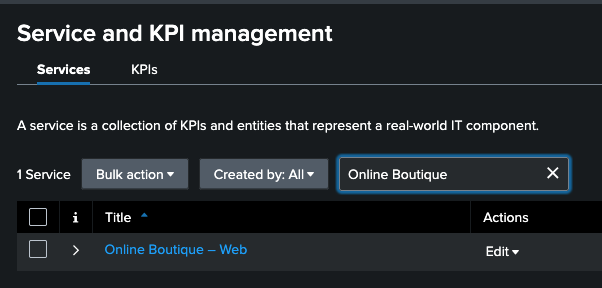
4 - Keep the KPI
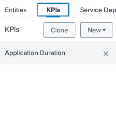
5 - Adjust the Entities
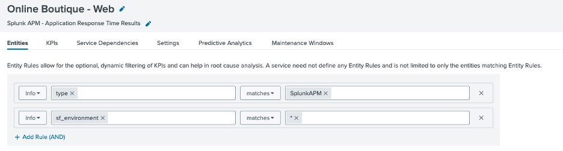
6 - Save and enable
Online Boutique – Hosts
- Clone the service
o11yOS Hosts - Rename it to
Online Boutique - Hosts - Delete existing KPIs, keeping only the following:
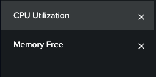
Entity Configuration:
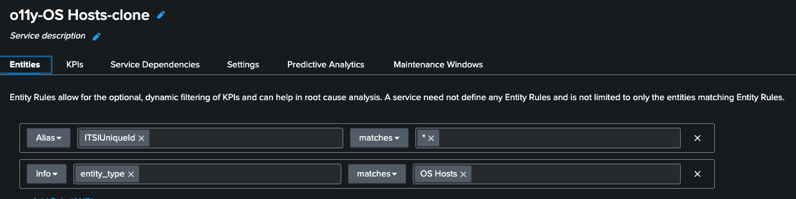
- Save and Enable the service.
Online Boutique – K8s
This service is created manually to demonstrate how to build a service with a custom Generic KPI from scratch.
Navigation path:
Apps > IT Service Intelligence > Configuration > Service Monitoring > Service and KPI Management
- Click Create Service
- Select Manually add service content
- Name it Online Boutique – K8s and click Create
- In the KPI tab, click New → Generic KPI
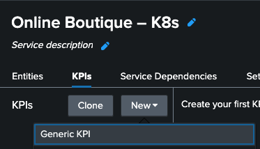
KPI Settings:
| Field | Value |
|---|---|
| Title | CPU POD |
| Search Type | Ad hoc Search |
| Threshold Field | _time |
Ad hoc Search Query:
| sim flow query="data('container_cpu_utilization',
filter=filter('k8s.pod.name', '*') and filter('k8s.cluster.name', '*'),
rollup='rate').promote('plugin-instance',
allow_missing=True).publish(label='cpuUtilization')"
| stats avg(_value) as cpuUtilization by k8s.pod.name k8s.cluster.name sf_organizationID _time sf_realm
| eval SplunkInfraEntity = 'k8s.cluster.name' + "-" + 'k8s.pod.name' + "-" + sf_organizationID + "-" + sf_realm
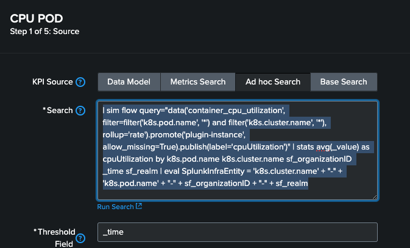
Note: For this KPI, we will not split by entities.
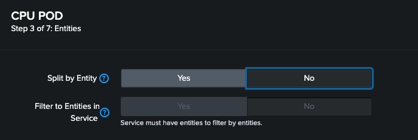
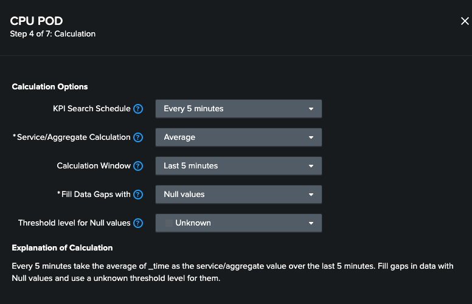
- Click Finish
The completed service should look like this:
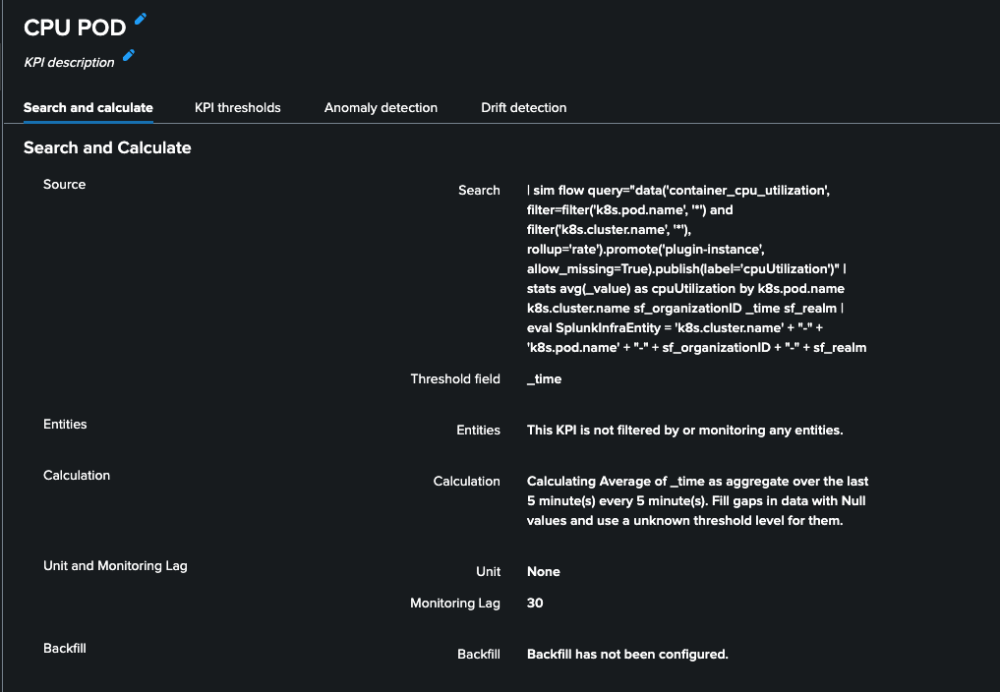
- Save and Enable the service.
OnlineBoutique Cloud-Native
This is the top-level aggregation service for all Splunk Observability Cloud services.
Navigation path:
Apps > IT Service Intelligence > Configuration > Service Monitoring > Service and KPI Management
- Click Create Service
- Select Manually add service content
- Name it OnlineBoutique Cloud-Native
- Click Create
- Go to Service Dependencies → Add Dependencies
- Add the 3 services created in this section:
Online Boutique - HostsOnline Boutique - WebOnline Boutique - k8s
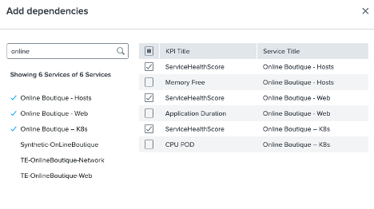
- For each service, keep only the
HealthScoreas the KPI - Done
- Save and Enable the service.
Online Boutique
Now Let's create the last service (OnLine Boutique)
Navigation path:
Apps > IT Service Intelligence > Configuration > Service Monitoring > Service and KPI Management
- Click Create Service
- Select Manually add service content
- Name it OnLine Boutique
- Click Create
- Go to Service Dependencies → Add Dependencies
- Add the 3 services created in this section:
Online Boutique - Cloud-NativeLegacySystemsSynthetic-OnLineBoutique
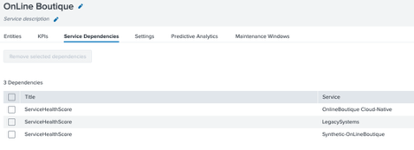
- For each service, keep only the
HealthScoreas the KPI - Done
- Save and Enable the service.
Service Analyzer
In the Service Analyzer the service tree
Navigation path:
Apps > IT Service Intelligence > Service Analyzer
Now navigate and explore the KPIs, entity views and the deep dives
In the next step we will create Notable Events and Episodes
Troubleshooting
| Issue | Resolution |
|---|---|
| No matched entities found | Verify that Discovery Search is enabled and has executed at least once |
| Service not appearing in Service Analyzer | Wait a few minutes after saving and enabling the service |
| Template not found in dropdown | Confirm the content pack was properly installed and imported |
| KPI returning no data | Validate the entity rules and confirm data is flowing into Splunk |
--